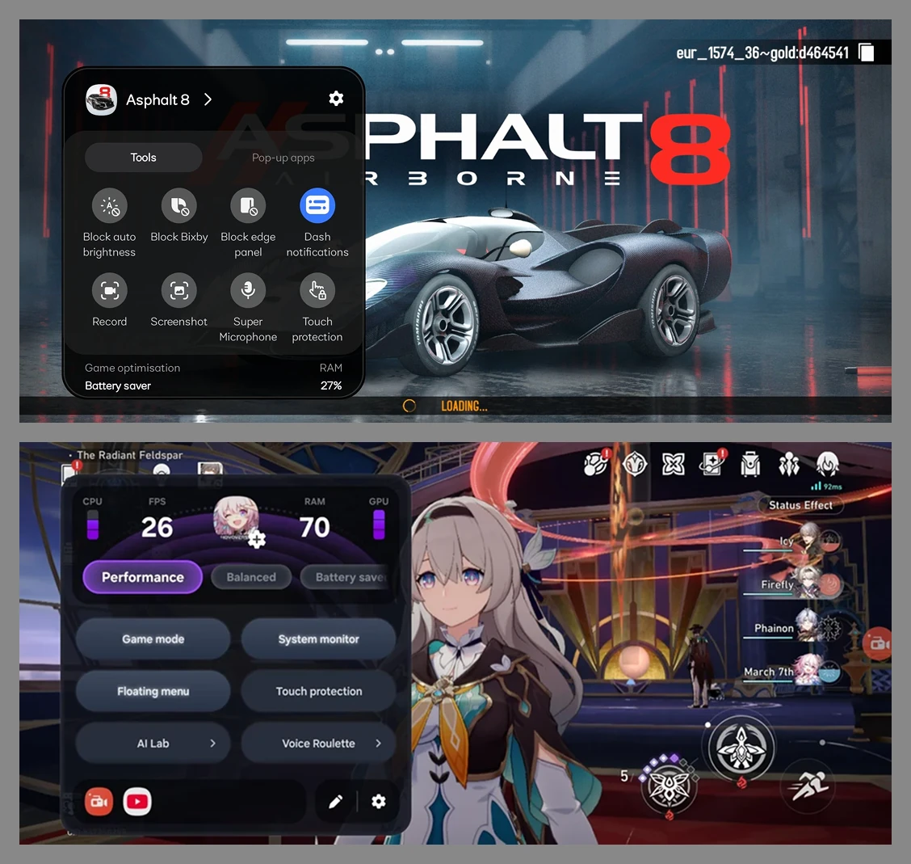
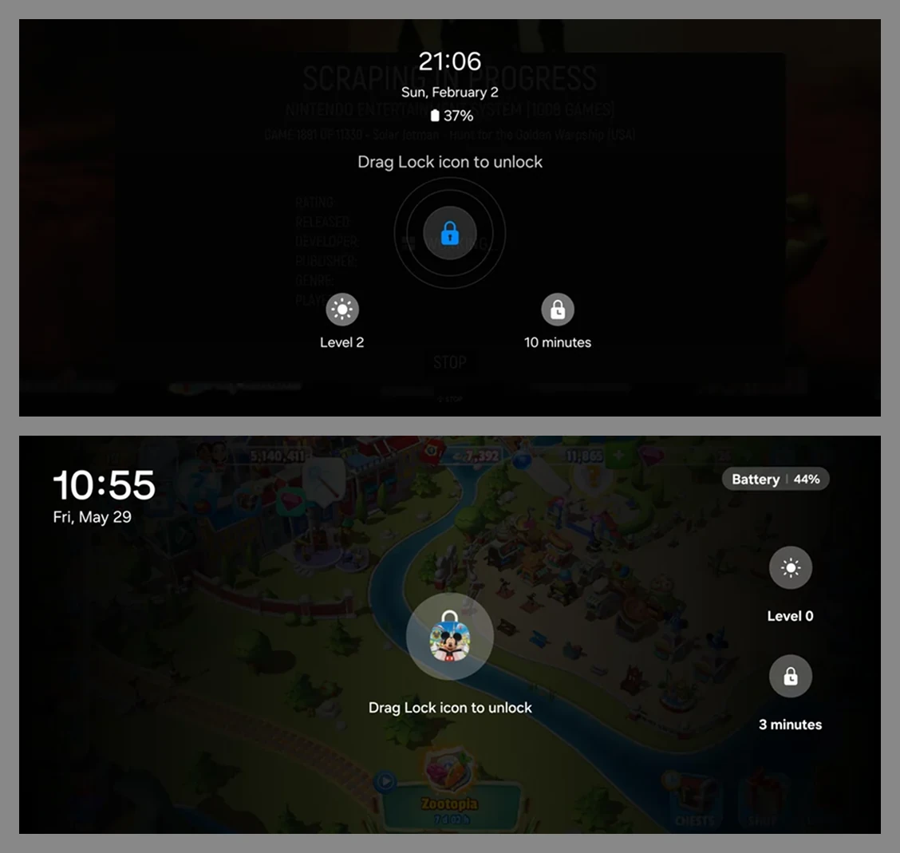

One UI 8.5 · System UI · Initiated & led
Game Booster Redesign
Nobody was planning to touch Game Booster. I made the case that it was overdue — then led a 7-person team to ship the redesign on an aggressive timeline.
Role Initiator · UI lead
Team 7 (design + eng)
Ship One UI 8.5
Scope Galaxy lineup
Challenge
Game Booster is the system layer that tunes a phone to a game in progress — display, computing, notifications, capture. Around half of phone owners play mobile games, so it ships on every Galaxy, but it had grown into a bag of separate toggles rather than a place to control anything, and had gone years without design investment while competing gaming phones moved past it.
Approach
- In-context panel: adjust settings, view live stats (FPS / CPU / GPU / RAM), and capture — without exiting gameplay
- Three color-coded performance modes (Performance / Balanced / Battery Saver) with per-game saved configurations
- Anti-interference gesture system preventing accidental status-bar pulls, navigation gestures, and assistant triggers mid-game
- Four notification styles (System / Pop-up / Bubble / Dash pill) tunable for transparency, animation, and sound
What players asked for
We recruited gamers inside the company and designed against what they told us.
- Make it a dashboard, not tabs. The panel should be somewhere to read the state of the phone, not a list to page through.
- Let me change performance mode here. Engineering pushed back on what it would cost to expose mode switching in the overlay. We worked it out together instead of dropping the request.
- Show me system load. Delivered as a minimal monitor — players wanted to glance at load, not read a diagnostics panel.
- I can't read the buttons. Legibility reworked for a phone held in landscape, mid-game, at arm's length.
Behind the ship — what we traded off
Key decisions & trade-offs
- In-context overlay over a full-screen hub. A dedicated hub app is easier to build and demo, but every second outside the game is the failure we were fixing. Everything — settings, live stats, capture — stays inside a panel that never leaves gameplay.
- Three presets instead of granular sliders. Power users asked for per-parameter control; most players just want "make it fast" or "make it last." Color-coded presets carry the default path, and per-game saved configurations serve the tuners without cluttering the panel.
- Interference handling as a system, not a toggle. Accidental status-bar pulls, navigation gestures, and assistant triggers each break gameplay differently — so each got its own guard behavior instead of one blunt "block everything" switch.
- Notifications as a style matrix. Rather than one gaming notification style, we shipped four (System / Pop-up / Bubble / Dash pill) with transparency, animation, and sound tunable — because tolerance for interruption differs by game genre, not by user.
Outcome: Shipped in One UI 8.5 across the Galaxy lineup, and picked
up in a full write-up of the redesign:
"One UI 8.5 is shaping up to be one of Samsung's most meaningful updates in years." — SammyGuru, on the Game Booster overhaul
The panel

Touch protection
